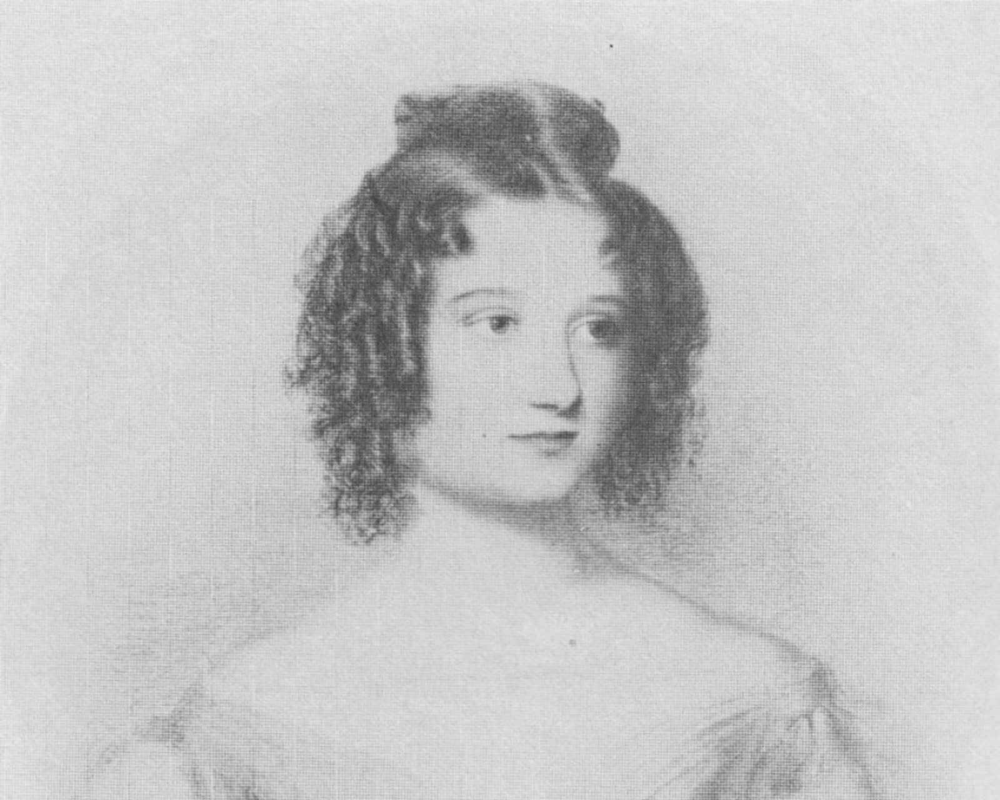
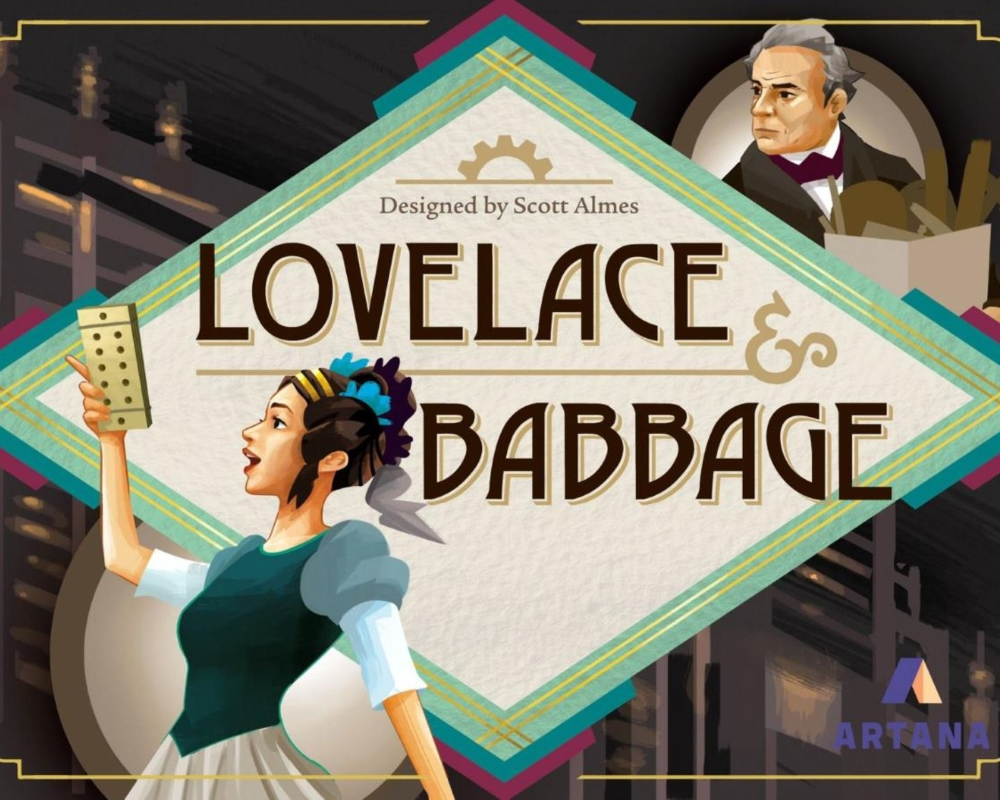

Ada Lovelace (also known as Ada Byron) was born on December 10, 1815, in London.
She was a Victorian-era mathematician who is well-known for her work with
Charles Babbage
on the Analytic Engine and is widely celebrated
as the first computer programmer.

Women in CS
Ada Lovelace was the first programmer EVER and she was a WOMAN.
Ada Lovelace had a huge impact of computer programming. There are lots of interesting
articles about women in computing and the history behind how CS became a male dominated
field. There is also a class at Illinois Tech that is taught by Mars Hick if you are
interested in that!
Lovelace’s Mathematical Work
Ada’s mother, Lady Byron, insisted that Ada be tutored privately and study mathematics too (at the
time that was an unusual education for a woman). Ada Lovelace's main work is the "Notes", which is
the culmination of Lovelace's paper, following many pages of detailed explanation of the operation
of the Engine and the cards, and the notation of the tables.
The “Notes” by Ada Lovelace
She created the stepwise sequence of operations for solving certain mathematical problems (the machine progressed through
a string of instructions input from punched cards). There were seven explanatory notes to her translation,
which run about three times the length of the original work by Babbage. This represents the most complete contemporary account
in English of this much-misunderstood machine! The picture above is Lovelace's diagram from "note G", the first published computer.
Lovelace’s Vision
Ada also expanded upon Babbage’s general views of the Analytical Engine as a symbol-manipulating device
rather than a mere processor of numbers, suggesting that it “might act upon other things besides number”
She was the first to express the potential for computers outside mathematics and envisioned a machine
that could also process musical notes, letters and images, anticipates modern computers by a hundred years.
Alan Turing even cited Lovelace in an influential 1950 article on artificial intelligence.
Patriarchal Society
The nineteenth century society was very patriarchal. Women supposed to have the role of mere observers, wives,
or mothers because they were not considered as “independent” or as “mature”. This is still present today unfortunetly but to a lesser extent
in English and American cultures.
Ada was still able to manage to be successful despite the many restrictions on women at the time.
The fact that she was born into a wealthy family and had a good education was a factor but that does not
remove the fact that she had a brilliant mind and a vision.
Ada also received support from her husband, William King. He copied articles for her in libraries because
as a woman she was not allowed to go to libraries
Ada in Pop Culture
There are a few movies out there such as concieving Ada and Ada where actors play as Lovelace.
Ada was pretty popular in the steampunk circle. Steampunk is a subgenre of science fiction that incorporates retro futuristic
technology and aesthetics inspired by 19th-century industrial steam-powered machinery. It comes from the idea that
technology never developed beyond steampunk (steamengines).
Steampunk Novels with Ada
Ada was an inspiration for The Thrilling Adventures of Lovelace and Babbage: The (Mostly) True Story of the First Computer
steampunk graphic novel written and drawn by Sydney Padua. It features Ada Lovelace and Charles Babbage in an alternative
universe where they have successfully built an Analytical Engine and use it to "fight crime".
Minor character in The Difference Engine by William Gibson and Bruce Sterling (classic Steampunk novel)
alternative history novel that is widely regarded as a book that helped establish the genre conventions of steampunk.
In the novel, Lovelace is a minor character that goes by Ada Byron.
Ada Byron (unlike reality) is alive to see her first computer programs become reality
Short part about her in the book but she has a strong presence (which was good at capturing what she was like in real life)
Ada's Legacy: Cultures of Computing from the Victorian to the Digital Age
ACM’s book: ACM stands for Association for Computing Machinery.
ACM Books is a series of scholarly research monographs and graduate-level texts.
It is an interdisciplinary collection of papers inspired by Ada's life, work, and legacy.
The book covers Ada's collaboration with Babbage,
her position in Victorian and steampunk literature, her representation in contemporary
art and comics, and her increasing relevance in promoting women in science and technology.
Charles Babbage (1791–1871) was fascinated by math at an early age and went to Cambridge. He then took off
on his own to found the Analytical Society in 1812. The society helped transform the field of math in Britain.
He also became a Lucasian Professor of Mathematics at Cambridge. He was an inventor and helped create Britain’s
modern postal service, a cowcatcher for trains, and other tools.
Charles Babbage’s Famous Work
His first project was a calculating machine called "The Difference Engine" and his second
was analytical engine (The one Ada added to).
The Analytical Engine paper was a French book that was published was by Babbage and Luigi Federico Menabrea
(later Prime Minister of Italy) prepared it from his notes and had an account of her own. Menabrea’s account
dealt little with mechanical details. Instead he described the functional organization and mathematical operation
of this more flexible and powerful invention.
Charle’s and Ada’s mathematical relationship
Ada met Babbage at a party in 1833 when she was seventeen and was entranced when Babbage demonstrated
the small working section of the Engine to her.
Ada had strong respect for Babbage and he guided her education and they corresponded for many years.
Augustus De Morgan
De Morgan was a founding professor of mathematics at the London University and Ada toop an informal correspondence course with him.
He gently prompted Lovelace to address the gaps in her knowledge that had resulted from the
patchwork nature of her prior mathematical education.
Lord Byron was one of the leading figures of the Romantic Movement in early 19th century England.
He was well known for his sexual escapades and his beautiful and brilliany peotry writings. The image above
is one of his famous poems, There is Pleasure in the Pathless Woods.
What was Lord Byron's impact?
Lord Byron's bisexuality was known "on the street" because he was very open about it at a time when it wasnt "acceptable". Unfortunetly,
it was well known that Byron did not treat women well and some even said he was a "womanizer". A lot of his life was spent trying to
actively support the Greek struggle for independence from Ottoman rule. There are many LGBTQ+ folks today who Lord Byron influences
many through his poetry and sexuality.
Random Fun Facts
Augusta “Ada” Byron was her birth name!
She was the only "legitamate" child from her father.
In the 1970s, there was a computer language, ADA, that was named after her
Ada did not have a loving family due to the fact that:
Her father wanted a boy child and never cared for her
Her mother and father had a bad divorse and she hated him
Ada tried to escape her mother because she thought she was a dissapointment
Does Ada Lovelace have a "holiday"?
Ada Lovelace was so important and impactful to this world that there is an Ada Lovelace Day
that on October 12 every year!
Was Ada Lovelace part of the LGBTQ+ community?
Many believe that Ada may have been LGBTQ but there is no facts/information that shows that as of right now.
Her father, Lord Byron, was. She married William King in 1835.

Fun Interactive Ada Lovelace Game
This site is a great way to learn more about Ada Lovelace and milestones/important events that
happen during her life. It is an interactive timeline game where you learn about an event and pick where it fits
in the timeline!
There is also a board game called "Lovelace and Babbage". It is a fun game where each player has their own unique abilities
and subroutines, providing asymmetric gameplay and new challenges.
Ada Lovelace and the first computer programme in the world. Max-Planck-Gesellschaft. (n.d.).
Retrieved November 12, 2021, from https://www.mpg.de/female-pioneers-of-science/Ada-Lovelace.
Ada Lovelace. Ada Lovelace | Babbage Engine | Computer History Museum. (n.d.). Retrieved November 12, 2021,
from https://www.computerhistory.org/babbage/adalovelace/.
Ada Lovelace's mathematical papers. Clay Mathematics Institute. (n.d.). Retrieved November 12, 2021,
from https://www.claymath.org/publications/ada-lovelaces-mathematical-papers.
Aiello, Luigia Carlucci. “The Multifaceted Impact of Ada Lovelace in the Digital Age.” Artificial Intelligence,
Elsevier, 2 Mar. 2016, https://www.sciencedirect.com/science/article/pii/S0004370216300224.
“Byron and Don Juan: A Case Study and Queer ... - UTC Scholar.” Byron and Don Juan,
https://scholar.utc.edu/cgi/viewcontent.cgi?article=1273&context=honors-theses.
Goodreads. (1992, February 1). The difference engine by William Gibson. Goodreads. Retrieved November 12, 2021,
from https://www.goodreads.com/book/show/337116.The_Difference_Engine.
How Ada Lovelace's notes on the Analytical Engine created the first computer program. BBC Science Focus Magazine. (2020, October 13).
Retrieved November 12, 2021, from
https://www.sciencefocus.com/future-technology/how-ada-lovelaces-notes-on-the-analytical-engine-created-the-first-computer-program/.
“Lord Byron.” Biography.com, A&E Networks Television, 22 June 2020, https://www.biography.com/writer/lord-byron.
Morais, Betsy. “Ada Lovelace, the First Tech Visionary.” The New Yorker, 15 Oct. 2013,
https://www.newyorker.com/tech/annals-of-technology/ada-lovelace-the-first-tech-visionary.
Seymour, M. (2019, March 22). The steampunk story of Ada Lovelace - 19th-century coder. Subscribe to read | Financial Times.
Retrieved November 12, 2021, from https://www.ft.com/content/7308bbde-474e-11e9-b83b-0c525dad548f.
The Difference Engine. Mathfiction: The Difference Engine (William Gibson / Bruce Sterling). (n.d.). Retrieved November 12, 2021,
from https://kasmana.people.cofc.edu/MATHFICT/mfview.php?callnumber=mf465.
The first published computer programs, translated and augmented by lord Byron's daughter.
The First Published Computer Programs, Translated and Augmented by Lord Byron's Daughter : History of Information.
(n.d.). Retrieved November 12, 2021, from https://www.historyofinformation.com/detail.php?id=467.
Wikimedia Foundation. (2021, October 4). The thrilling adventures of lovelace and Babbage. Wikipedia.
Retrieved November 12, 2021, from https://en.wikipedia.org/wiki/The_Thrilling_Adventures_of_Lovelace_and_Babbage.
Wilde, R. (2019, September 11). How the "Difference engine" became the modern-day computer. ThoughtCo.
Retrieved November 12, 2021, from https://www.thoughtco.com/first-computer-charles-babbages-1221836.
Wolfram, Stephen. “Untangling the Tale of Ada Lovelace.” Wired, Conde Nast, 22 Dec. 2015,
https://www.wired.com/2015/12/untangling-the-tale-of-ada-lovelace/.